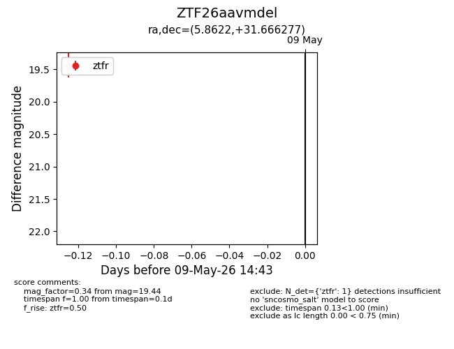
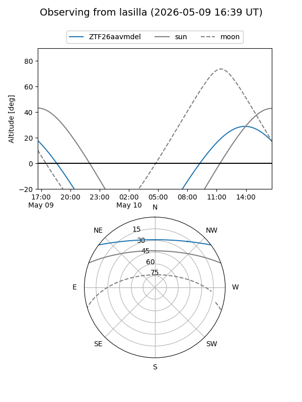
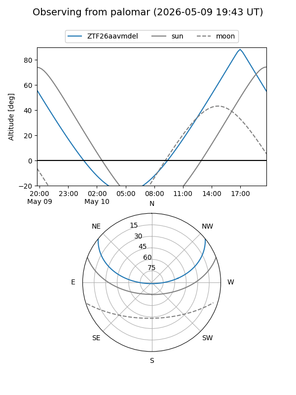

ZTF26aavmdel
Target ZTF26aavmdel at 2026-05-09 14:44
Aliases and brokers:
FINK: link
Lasair: link
ALeRCE: link
alt names
ZTF26aavmdel (ztf,fink_ztf)
Coordinates:
equatorial (ra, dec) = 5.8622,+31.66628
equatorial (HMS+DMS) = 00:23:26.92,+31:39:58.60
galactic (l, b) = (115.9967,-30.82828)
Flags:
Photometry:
last ztfr=19.44
1 ztfr detections
Lightcurve

Visibility


Additional plots